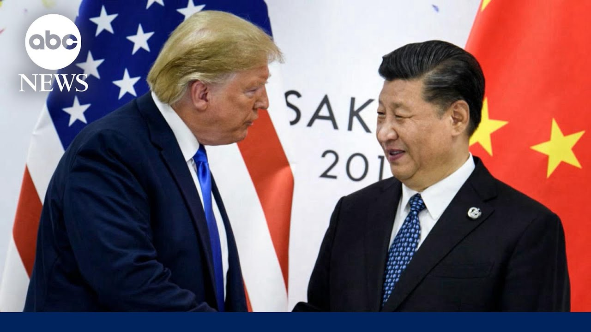

【特朗普在与中国会谈前提议降低关税】
Summary: 美国总统特朗普在美中官员本周末于瑞士会晤之际，暗示可能降低对华关税，但白宫态度谨慎，降低外界预期。
摘要： 美国总统特朗普在美中官员本周末于瑞士会晤之际，暗示可能降低对华关税，但白宫态度谨慎，降低外界预期。

⏱️ Estimated Reading Time: 4 min
Turning now to President Trump's trade war as US and Chinese officials meet in Switzerland this weekend.
现在转向美国总统特朗普的贸易战，美中官员本周末在瑞士会晤。
President Trump suggesting he's open to lowering tariffs on China, but the White House remains cautious, downplaying expectations.
特朗普总统暗示他愿意降低对华关税，但白宫态度谨慎，降低外界预期。
ABC Selena Wang is in Washington with the latest.
ABC的Selena Wang在华盛顿带来最新消息。
Selena, good morning.
Selena，早上好。
Hey, good morning, Whit.
嘿，早上好，Whit。
And these are the first in-person talks between the US and China since the latest trade war began.
这是自最新贸易战开始以来美中首次面对面会谈。
And it's this first sign we're getting that there could be an end in sight to this standoff with both countries feeling the economic pain.
这是我们看到的第一个迹象，表明这场僵局可能即将结束，两国都感受到了经济痛苦。
This morning, highstakes trade talks underway between American and Chinese officials in Switzerland as President Trump suggests he could lower his 145% tariffs on Chinese goods.
今天早上，美中官员在瑞士进行高风险贸易谈判，特朗普总统暗示可能降低对中国商品的145%关税。
Writing on social media, 80% tariff on China seems right.
他在社交媒体上写道，对华80%的关税似乎是合适的。
China has previously demanded Trump first remove tariffs before coming to the negotiating table, but the White House says China needs to make concessions first.
中国此前要求特朗普在谈判前先取消关税，但白宫表示中国需要先做出让步。
The president still remains uh with his position that he is not going to unilaterally bring down tariffs on China.
总统仍然坚持他的立场，即他不会单方面降低对华关税。
As for the 80% number, that was a number the president threw out there and we'll see what happens this weekend.
至于80%这个数字，那是总统随口提出的，我们看看本周末会发生什么。
Overnight, the president was asked if he'll be disappointed if his team comes back without a deal.
昨晚，总统被问及如果他的团队空手而归，他是否会失望。
No, not at all.
不，一点也不会。
We already made a great deal.
我们已经达成了很好的协议。
We're not doing business with China right now.
我们现在没有与中国做生意。
China remains defiant, saying this meeting is at the request of the United States.
中国仍然态度强硬，称这次会晤是应美国的要求。
China firmly opposed the indiscriminate imposition of tariffs by the US side.
中国坚决反对美方不加区别地加征关税。
And we're now more than 30 days into President Trump's 90-day pause on his sweeping tariffs.
特朗普总统的90天暂停全面关税已经过去了30多天。
And so far, the president has only announced one trade deal with the United Kingdom.
到目前为止，总统只宣布了与英国的一项贸易协议。
And with it's only a framework that's very light on details.
而且这只是一个细节非常少的框架。
Something to watch there.
值得关注。
And Selena, another headline we're following here.
Selena，我们还在关注另一条新闻。
What more are you learning about this news overnight?
关于昨晚的这条新闻，你还有什么新消息？
A federal judge temporarily blocking President Trump's plans to dramatically reduce the size of the federal government.
一名联邦法官暂时阻止了特朗普总统大幅缩减联邦政府规模的计划。
Yeah.
是的。
What?
什么？
So, this is a significant setback for the Trump administration.
这对特朗普政府来说是一个重大挫折。
This federal judge is putting pause on their plans for these massive layoffs and reductions across 21 federal departments and agencies.
这名联邦法官暂停了他们在21个联邦部门和机构进行大规模裁员和缩减的计划。
That includes the Department of Health and Human Services, Commerce, Energy, Treasury, and State.
这包括卫生与公众服务部、商务部、能源部、财政部和国务院。
This judge is arguing that the president doesn't have the authority to make these massive changes because he needs the help of Congress.
这名法官认为，总统无权做出这些大规模改变，因为他需要国会的帮助。
Gio.
Gio。
All right.
好的。
A lot to watch there.
有很多值得关注的地方。
All right, Selena.
好的，Selena。
Thank you so much.
非常感谢。